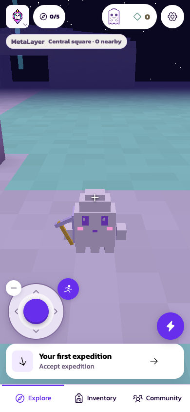
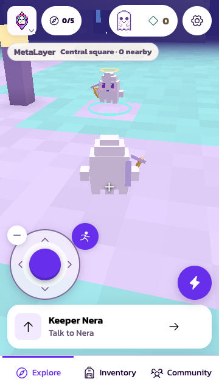
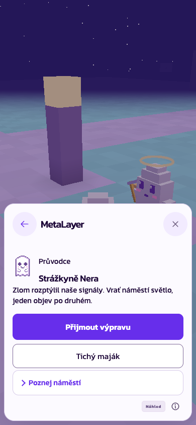
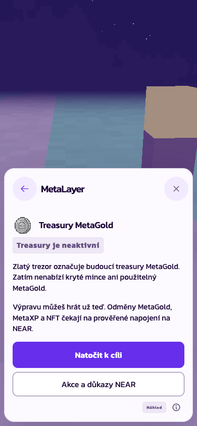
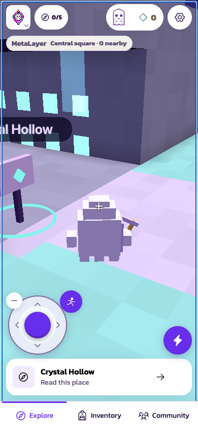
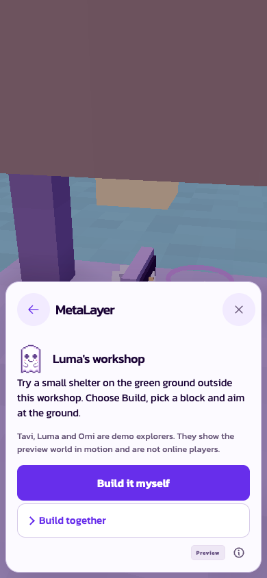
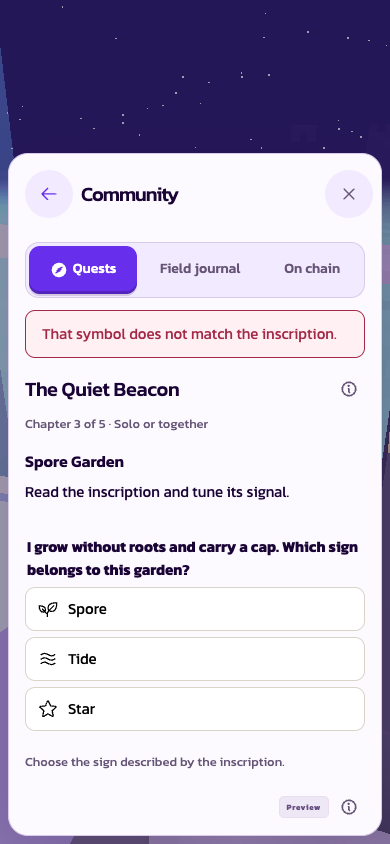
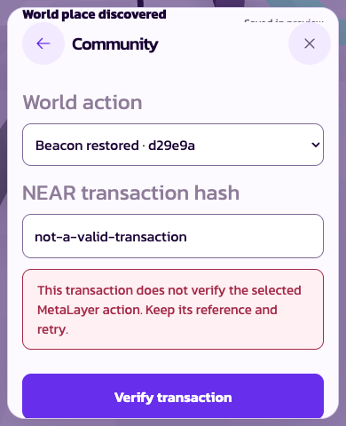
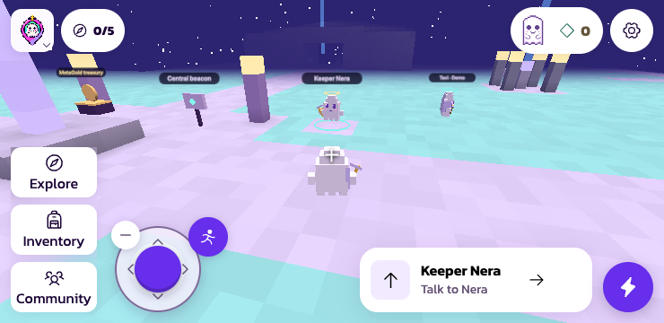
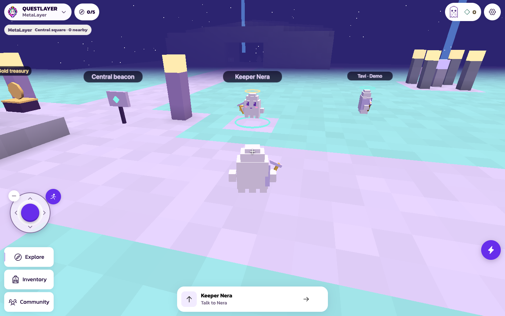

MetaLayer: visible places, compact controls
Built-App observations. Read the handoff and limitations. No MetaGold, XP, NFT or chain issuance is active.

Before: the previous preview left the story in a panel. This is an older capture.

After: a 360 px phone faces Nera. One compact next action; atlas and materials are folded.

Requested greeting: one short line, expedition action and optional tour.

The golden vault explains the real inactive treasury state.

The cave has its own board and nearby action.

Workshop: a local reason to build, with the shared-land boundary explained.

A wrong clue answer stays in the requested quest sheet.

Named dormant-form fixture: enlarged text and reduced keyboard space preserve the failed reference. No real chain proof.

Short landscape: shared rail, left stick and compact objective stay separate.

Desktop: physical guide, world labels and labelled demo explorer. Real nearby-player count stays separate.
Software browser rendering only. Physical iOS/Android, real NEAR transactions, funded coins, NFTs and further UI polish remain owner work.